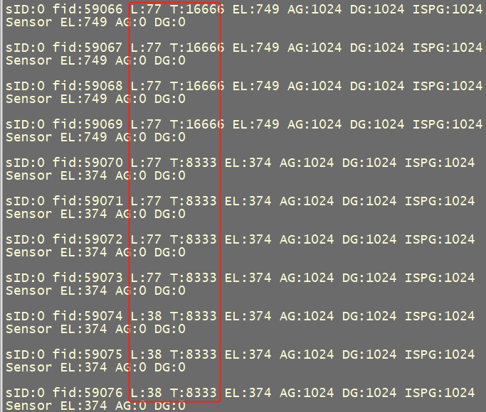
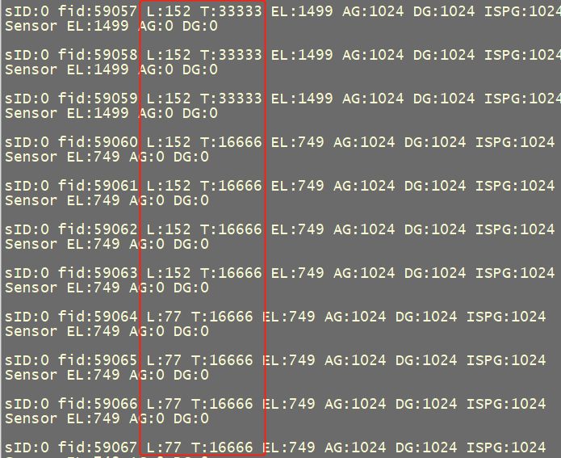
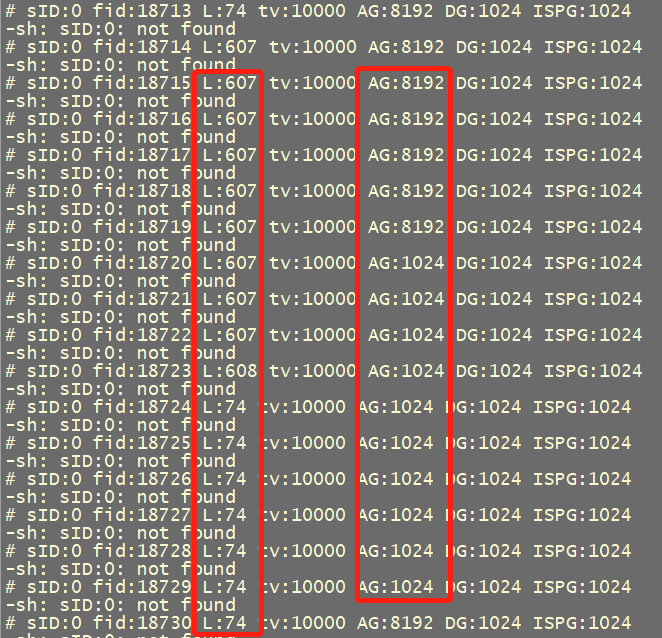
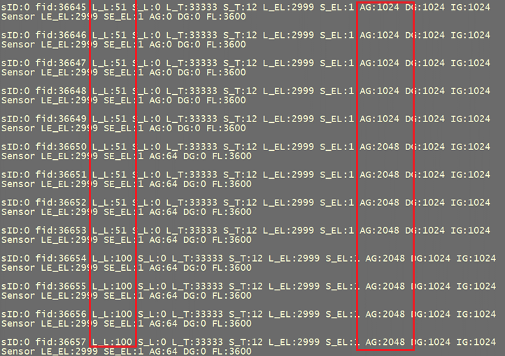
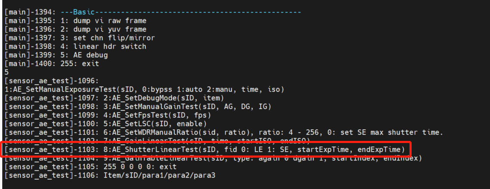
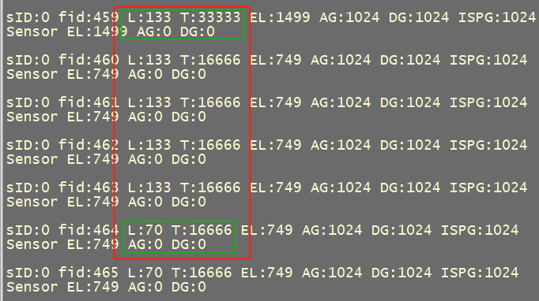
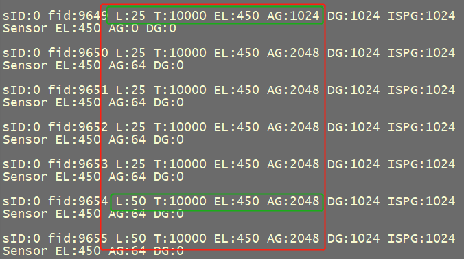
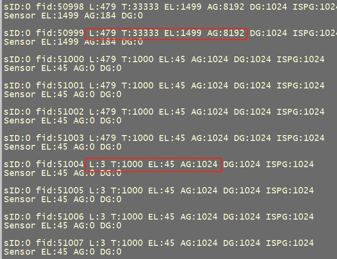

10. AERelatedVerification¶
the corresponding contentcompleteImageVerificationthe corresponding contentcanthe corresponding contentAEthe corresponding content，AEthe corresponding contentBasicthe corresponding contentExposure、GainYeslinearthe corresponding content，the corresponding contentFrame、the corresponding contentneedVerification。
mainlyYescompleteSensorPorting_AE(sensor_test)the corresponding contenttablethe corresponding contentVerification。Verificationthe corresponding contentneedthe corresponding contentsensor_testTestthe corresponding content。
Note：the corresponding contentAERelatedVerificationthe corresponding content，needthe corresponding content。
10.1. BLCverifythe corresponding contentVerification¶
sensor specthe corresponding contentblc offsetthe corresponding content，the corresponding contentWritexxx_cmos_param.h。
ifthe corresponding contentthroughthe corresponding contentTestthe corresponding contentblcthe corresponding content：
modifyxxx_cmos_param.h，the corresponding content，273Tablethe corresponding contentblc offset, Allthe corresponding content0。

the corresponding contentLens，the corresponding contentenvironmentthe corresponding contentRunsensor_test，InputCMD
5
2 0 70 0 0
the corresponding contentLumathe corresponding content4the corresponding contentYesthe corresponding contentblc offsetthe corresponding content。
the corresponding contentas followsthe corresponding contentblc offsetthe corresponding content74x4=286。

the corresponding contentTestthe corresponding contentblc offsetthe corresponding contentgain = 4095/（4095 - offset）*1024 the corresponding content 1106， the corresponding contentverifythe corresponding contentblcthe corresponding contentgainthe corresponding contentxxx_cmos_param.h。
10.2. Exposurelinearthe corresponding contentVerification¶
the corresponding contentLensthe corresponding contentenvironmentthe corresponding contentRunsensor_test，linearmodethe corresponding contentInputCMD
5
2 0 71 0 0
Wdrmodethe corresponding contentExposureInputCMD
5
2 0 75 0 0
Wdrmodethe corresponding contentExposureInputCMD
5
2 0 76 0 0
the corresponding contentAE Brightnessthe corresponding content 1/60s the corresponding contentExposureTimethe corresponding content 1/30s the corresponding content， AEBrightnessthe corresponding content1/120s the corresponding contentExposureTimethe corresponding content 1/60s the corresponding content， the corresponding contentas followsFigurethe corresponding contentresultthe corresponding contentYesthe corresponding content。
{kind=link}

{kind=link}

10.3. Gainlinearthe corresponding contentVerification¶
the corresponding contentLensthe corresponding contentenvironmentthe corresponding contentRunsensor_test，linearmodethe corresponding contentInputCMD
5
2 0 72 0 0
Wdrmodethe corresponding contentInputCMD
5
2 0 77 0 0
the corresponding contentFigureYesTestresult，linear modethe corresponding contentagainthe corresponding content1024increasethe corresponding content8192， lumathe corresponding content74the corresponding content607，Basicthe corresponding content8the corresponding content。
Wdr modethe corresponding contentagainthe corresponding content1024the corresponding content2048，lumathe corresponding content51the corresponding content100, Basicthe corresponding content2the corresponding content。
the corresponding contentFigurethe corresponding contentlumathe corresponding contentagainthe corresponding contentlinearthe corresponding content。
{kind=link}

{kind=link}

10.4. the corresponding contentVerification¶
ifthe corresponding contentVerificationExposurelinearthe corresponding content，needthe corresponding contentCMD
5
8 SID FID startExpTime endExptime
{kind=link}

canTestthe corresponding contentExposurelinearthe corresponding content，Tablethe corresponding contentstartExpTimethe corresponding contentendExpTimethe corresponding content%5the corresponding content。
SIDTablethe corresponding contentsensorID, FIDTablethe corresponding contentframeID,0Tablethe corresponding contentFrame，1Tablethe corresponding contentFrame。
ifthe corresponding contentVerificationGainlinearthe corresponding content，needthe corresponding contentCMD
5
7 SID FID time StartISO EndISO
canTestthe corresponding contentGainlinearthe corresponding content，Tablethe corresponding contentStartISOthe corresponding contentEndISOthe corresponding contentgaintablethe corresponding content。the corresponding contentISO 100Tablethe corresponding content1x，the corresponding contentgain=1024.

10.5. Response FrameVerification¶
the corresponding contentsensorParameterthe corresponding contentTimethe corresponding content，the corresponding contentsensorthe corresponding content5 frameTimethe corresponding content，the corresponding content4 frameor3 framethe corresponding content。
the corresponding contentsensor，the corresponding content，the corresponding contentTimethe corresponding content，the corresponding contentneedVerificationAERelatedthe corresponding contentFrame。
Runsensor_test，linearmodethe corresponding contentInputCMD
5
2 0 71 0 0
the corresponding contentshutterthe corresponding contentframethe corresponding content。
the corresponding contentFigurethe corresponding contentshutterthe corresponding content33333the corresponding content16666the corresponding content，the corresponding content4the corresponding contentframethe corresponding contentLumathe corresponding content。
the corresponding contentExposurethe corresponding contentResponseFramethe corresponding content4.
{kind=link}

InputCMD
5
2 0 72 0 0
the corresponding contentgainthe corresponding contentframethe corresponding content。
the corresponding contentFigurethe corresponding contentagainthe corresponding content1024the corresponding content2048the corresponding content，the corresponding content4the corresponding contentframethe corresponding contentLumathe corresponding content。
the corresponding contentGainthe corresponding contentResponseFramethe corresponding content4.
{kind=link}

Testthe corresponding contentExposure、Gainthe corresponding contentResponseFramethe corresponding content，ResponseFramethe corresponding contentxxx_cmos.cthe corresponding contentcmos_get_ae_defaultfunctionthe corresponding content，as followsFigure：

10.6. ExposureGainthe corresponding contentVerification¶
the corresponding contentYesthe corresponding contentsensorthe corresponding contentYesgain 、shutterthe corresponding content，For examplethe corresponding contentgainthe corresponding contentResponseFrameYes4， shutterthe corresponding contentResponseFrameYes3，needthe corresponding contentExposureGainthe corresponding contentVerification。
Runsensor_test，linearmodethe corresponding contentInputCMD
5
2 0 73 0 0
the corresponding contentCMDTablethe corresponding content shutter/gain, AE the corresponding content。
the corresponding contentFigurecanthe corresponding contentshutterthe corresponding contentagainthe corresponding contentYesthe corresponding content4framethe corresponding content。
{kind=link}

ifthe corresponding contentGain、Exposurethe corresponding content，AE the corresponding content，the corresponding contentresult，the corresponding contentDescriptionGain、Exposurethe corresponding content。
L:479 T:33333 AG:8192
L:479 T:33333 AG:8192
L:479 T:1000 AG:1024
L:479 T:1000 AG:1024
L:299 T:1000 AG:1024
L:211 T:1000 AG:1024
L:3 T:1000 AG:1024
L:3 T:1000 AG:1024
L:3 T:1000 AG:1024
L:3 T:1000 AG:1024
the corresponding contentneedthe corresponding contentgainorshutterthe corresponding contentdelaythe corresponding content， modifyxxx_cmos.cthe corresponding content cmos_get_sns_regs_infofunction，modifyregisterthe corresponding contentdelaythe corresponding content。
the corresponding contentas followsFigurethe corresponding contentYesthe corresponding contentgainthe corresponding contentdelaythe corresponding content2 frame，Tablethe corresponding contentOtherthe corresponding contentregisterthe corresponding content2Frame。

10.7. FPSthe corresponding contentVerification¶
the corresponding contentsensor_testRunthe corresponding contentInputCMD
5
4 SID FPS

defaultRunthe corresponding contentfpsYes25fps，canviewvi_dbg viewsensorOutputthe corresponding contentfpsYesthe corresponding content。
Linux: cat /proc/cvitek/vi_dbg
Alios: Runsensor_test the corresponding contentInput7 –> 1